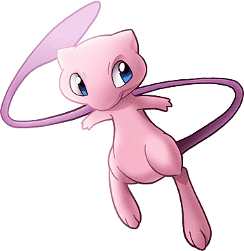
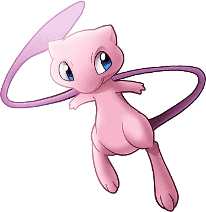

These are Pokémon that can be easily caught in the wild. Depending on the region, some Pokémon are more common than others and there are many of the same kind.
Very seldom in the wild. When you start your journey, you can pick one of three Pokémon. You can decide between a fire, water, or grass type Pokémon. In the main games, you won’t get the other starters through the main story. In the anime, there were some moments where starter Pokémon were in the wild, but these are only exceptions. Starters always have a 3-stage evolution line.
There are many legendary Pokémon in every region, but there is only one of each kind. These are powerful Pokémon and in every main game, they are always the cover Pokémon for the game. You can always catch this Pokémon through the story and have it in your team.
They are like legendary Pokémon. There is only one of each kind and they have a high base stat total. The only difference is, they’re much harder to get. You can have a legendary through the story, while mythical are only available through special events, where you can have them only once.
These are Pokémon that are basically general Pokémon, but way stronger than an average or good Pokémon. Every one of them has a 3-stage evolution line and always a base stat total of 600. To compare, a high base stat total for general Pokémon is 500 and legendary have over 700, so they are in the perfect middle.